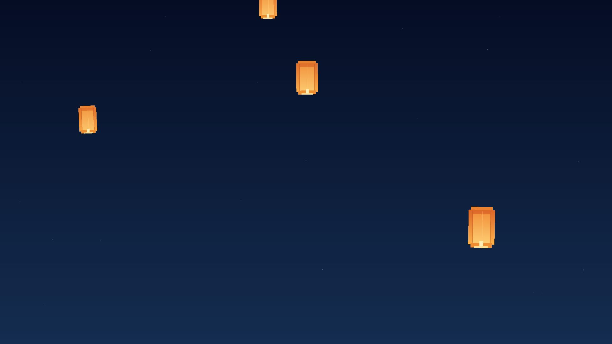
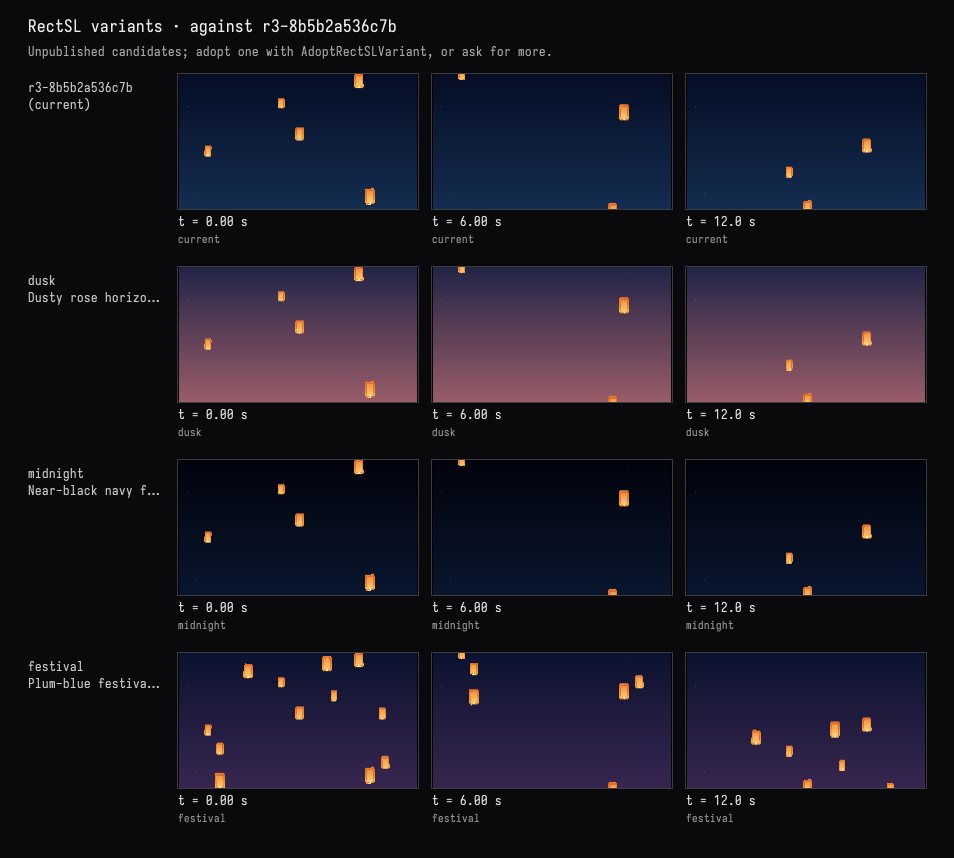

Three skies, motion untouched
The recorded exchange: the request, the tool activity, every image the tools returned to the model, and its reply. Expand tool activity to read the steps; open an image to see it full size.
Show me three moods for the sky behind them — dusk, deep midnight, and a festival night with more lanterns — without changing how the lanterns move.
Tool activity · 7 steps
Starting AI conversation
InspectRectSLStudy finished (1 ms)
Waiting for model
Evaluating variations for sky changes
Evaluating variations for sky changes
I'm thinking I need just three variants for the sky changes, but I want to keep it minimal. There should be a total of 12 options while preserving the existing formula. I need to ensure I use the tools correctly to compare the results and validate them. I’ll capture the visuals as needed, but if I can't edit them afterward, I'm still going to proceed with the requirements. Let's make this work!
Next tool:
CaptureRenderWindowRequestCaptureRenderWindowRequest finished (32 ms)
TryRectSLVariants finished (1808 ms)
Completed


Three checked previews are ready above, beneath the current scene:
- Dusk: dusty-rose horizon fading into blue-violet.
- Deep midnight: near-black navy, making the orange lanterns stand out sharply.
- Festival: plum-blue sky with 12 lanterns instead of 5.
The existing lanterns’ paths, speeds, sizes, and gentle sway remain unchanged. Festival adds seven using the same motion rules.
These are previews only—your current scene is unchanged. Choose dusk, midnight, or festival to apply it.